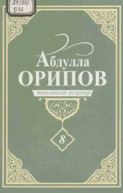

TAO'zbekiston xalq shoiri Abdulla Oripovning falsafiy va lirik she'rlari jamlangan sakkizinchi jild.
Ushbu kitob O'zbekiston Qahramoni va xalq shoiri Abdulla Oripovning sakkizinchi jildli tanlangan asarlar to'plamidir. Unda shoirning so'nggi yillarda yozilgan, chuqur falsafiy va ruhiy mazmunga ega bo'lgan yangi she'rlari jamlangan.